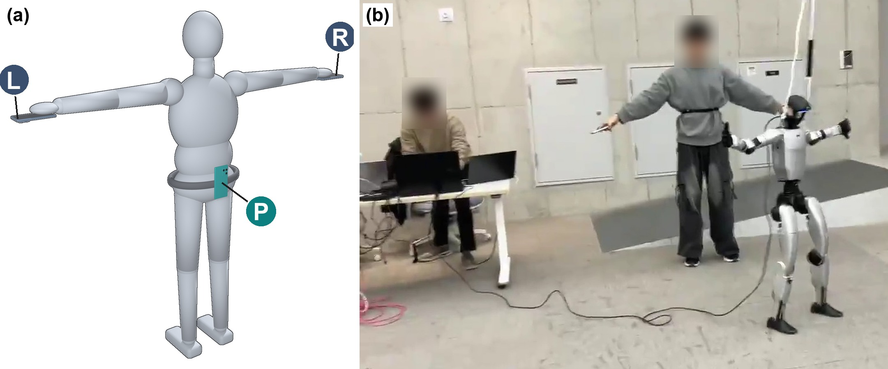

Three-phone run on the real G1 (2026-11-22, last run)
Left: the human pose that IMUCoCo estimated from the three phones. Right: the G1 target pose sent to the SONIC policy. Both were recorded by the estimation server at 60 frames/s and are replayed here at 30 frames/s. They are not measurements of the robot's joints; that the robot followed was confirmed on video. Drag a view to rotate it; pinch or Ctrl + scroll to zoom.
The paper's 60.0 frames/s and 114 ms p95 latency are the values the Studio showed for the 10 s window at 2 min 38 s during the run. The cards above are a post-hoc recomputation from the same recording (motion.jsonl), splitting the robot window into 10 s windows, so they need not match those values exactly.

Elbow from the AR hand position (Eq. 3)
Hand-held IMUs leave the elbow position undetermined. The distance d between the wrist, tracked by the phone's AR, and the shoulder, estimated by IMUCoCo, fixes the elbow flexion θ; the elbow then lies on a circle around the shoulder–wrist axis, and its place on that circle (the swivel angle φ) comes from the IMU estimate. Drag the wrist or change φ. Arm lengths are illustrative.
The robot runs used the IMU path only. This AR coupling was evaluated offline, by replaying three one-arm development recordings (preliminary). The arm-elevation error fell in two of the three; wrist jerk p95 rose 1.3- to 3.3-fold, above the 10% bound fixed in advance.
| Rec. | Condition | Elev. error (°) | Jerk p95 elbow / wrist (m/s³) |
|---|
Values are rounded from data/one-arm-replay/metrics.csv. "2 (recomp.)" uses the AR input recomputed at the same timestamps after it had been rejected during recording.
Published experiment logs
Only phone identifiers, private IP addresses and laptop paths were replaced by placeholders; measurements and timestamps are as recorded. Videos showing faces are not included.
2nd demonstration · three phones (11/22)
Raw phone packets, per-frame estimates and G1 targets, SONIC transmission record, controller log. Source of this replay and Fig. 3.
data/runs/20261122-174632-…1st demonstration · one phone, right hand (11/21)
Raw phone packets, per-frame latency and G1 arm targets, controller logs and the automatic stop 0.976 s after the app was closed.
data/runs/20261121-215716-…One-arm AR replay (Table 1)
Metrics per recording and condition. The three source recordings are not in this repository.
data/one-arm-replayTo recompute the paper's numbers, clone the repository and run the command below. It uses the Python 3 standard library only.
git clone https://github.com/sesepark/smartphone-g1-teleop cd smartphone-g1-teleop python3 tools/check_paper_numbers.py